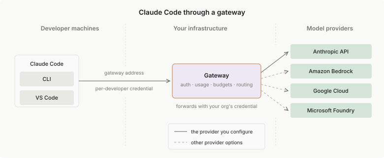

通过网关运行 Claude Code
通过自托管网关路由 Claude Code，实现集中式凭证管理、使用情况跟踪和成本控制。涵盖架构、Anthropic 的 Claude 应用网关以及使用其他网关产品。
网关是您的组织在 Claude Code 和模型提供商之间运行的代理。Claude Code 将 API 流量发送到网关，而不是直接发送到提供商，网关使用您的组织持有的凭证转发流量。开发人员向网关进行身份验证，而不是持有提供商凭证，因此身份验证、使用情况跟踪、预算和审计日志都在您控制的一个地方进行。
Claude Code 包含一个自托管网关，Claude 应用网关，在 claude 二进制文件中，因此您不必采用单独的网关产品来运行一个。如果您的组织已经运行了 LLM 网关，Claude Code 也可以与之配合使用。
本页涵盖：
How a gateway works
每个开发人员的 Claude Code 都指向网关的地址，并使用网关颁发的凭证进行身份验证。
网关对开发人员进行身份验证，应用您配置的任何访问和预算规则，并使用组织的凭证将请求转发给您的提供商。提供商可以是 Anthropic 的 API 或 云提供商，例如 Amazon Bedrock、Google Cloud 的 Agent Platform 或 Microsoft Foundry；网关的配置决定了这一点。使用 Claude 应用网关或另一个公开单个 Anthropic 格式端点的网关，更改提供商不需要触及开发人员的机器。

涉及两种凭证：
- 开发人员凭证：每个开发人员持有自己的凭证，由网关颁发。它向网关验证他们的身份，并在使用情况跟踪中识别他们
- 提供商凭证：网关为您的提供商账户持有一个凭证，由所有转发的流量共享
Choose a gateway
Claude Code 可与 Anthropic 自己的网关或您的组织已运行的网关配合使用。
Claude apps gateway
Claude apps gateway 是 Anthropic 的自托管网关，包含在 claude 二进制文件中。它路由到 Amazon Bedrock、Claude Platform on AWS、Google Cloud、Microsoft Foundry 或 Anthropic API 作为上游。开发人员通过 /login 使用您的企业身份提供商登录，网关按 IdP 组强制执行模型访问和 托管设置，并向您自己的可观测性堆栈发出 OpenTelemetry Protocol (OTLP) 使用指标。
因为它与每个 Claude Code 版本一起构建和测试，所以它转发 Claude Code 发送的 anthropic-beta 值和请求字段。单独维护的网关需要随着这些值和字段在每个版本中发生变化而 更新其转发规则；Claude apps gateway 与 CLI 一起发布，因此没有列表需要保持最新。有关在网关会话上行为不同的小功能集，请参阅 可用性和限制。
网关登录是浏览器 SSO 步骤，没有服务令牌流，因此没有开发人员批准登录的 CI 管道无法通过它进行身份验证；直接针对您的提供商配置这些。Agent SDK 会话和在开发人员已登录的机器上运行的 claude -p 使用该机器的网关会话，并受其策略管制。请参阅 CI 管道和远程机器。
请参阅 Claude 应用网关 来部署它。
Other gateways
如果您的组织已经运行了 LLM 网关或 API 网关，您可以改用它。Anthropic 不认可、维护或审计其他网关产品，也不支持通过任何网关将 Claude Code 路由到非 Claude 模型。有关管理员推出清单、网关必须实现的内容以及如何将 Claude Code 指向它，请参阅 其他 LLM 网关。
Subscriptions and gateways
当开发人员通过具有网关凭证的网关连接时，使用情况按 API 费率计费到您的组织的提供商账户，他们的 claude.ai 订阅不被使用或收费。为您运行的网关设置 ANTHROPIC_AUTH_TOKEN，或使用 /login 登录到 Claude 应用网关，会关闭该会话的订阅登录。在该凭证下转发的每个请求都计费到网关提供商凭证后面的账户。
例外是仅设置 ANTHROPIC_BASE_URL，没有网关凭证。请求仍然通过网关路由，但保存的 claude.ai 登录保持活跃凭证，因此订阅的使用限制和计费适用。其他 LLM 网关 涵盖该配置以及网关必须转发的内容才能使其工作。
Configure separately from the gateway
网关路由模型 API 请求。您可能期望它处理的一些事情在其他地方配置：
- 哪个模型回答：使用
/model命令或 模型环境变量 选择模型。网关决定请求去向，而不是开发人员选择的模型。Claude 应用网关可以使用每个组的availableModels允许列表限制选择，但开发人员仍在其中选择。 - 其他网络流量：Claude Code 本身将版本检查和下载直接发送到 Anthropic，与网关路径分开。您的网络仍需要出口到 必需的域，或设置
CLAUDE_CODE_DISABLE_NONESSENTIAL_TRAFFIC以关闭可选流。 - 客户端遥测：当会话登录到 Claude 应用网关时，Claude Code 会禁用其 Anthropic 绑定的客户端分析。要在登录前启动分析也保持关闭，请在每个设备上的 客户端托管设置 中提供
DISABLE_TELEMETRY。 - 其他网关上的客户端遥测：Claude Code 是否发送可选的客户端遥测流取决于您的提供商，遥测默认值表 涵盖每种情况。
- 遥测目标：Claude Code 发送网关会话遥测的位置取决于会话如何登录，开发人员上强制执行的内容 说明每种会话的导出去向。
- 企业 HTTP 代理：
HTTPS_PROXY位于 Claude Code 和它与之通信的每个服务器之间，包括网关。如果您的网络需要一个，配置代理 以及网关。对于您托管的 Claude 应用网关，登录检查代理主机也在私有网络上；如果不是，将网关主机添加到NO_PROXY，以便 CLI 直接连接到它。
Next steps
下一页取决于谁运行网关。Anthropic 的网关从 claude 二进制文件运行，有自己的设置指南；您的组织已运行的网关有一个要实现的兼容性指南和一个管理员推出清单。
- Claude 应用网关 部署 Anthropic 的自托管网关，具有 SSO 登录和 OTLP 遥测
- 其他 LLM 网关 了解您的组织已运行的网关必须实现的内容，以及如何将 Claude Code 指向它
- 为您的组织设置 Claude Code 了解网关是其中一部分的更广泛的推出决策